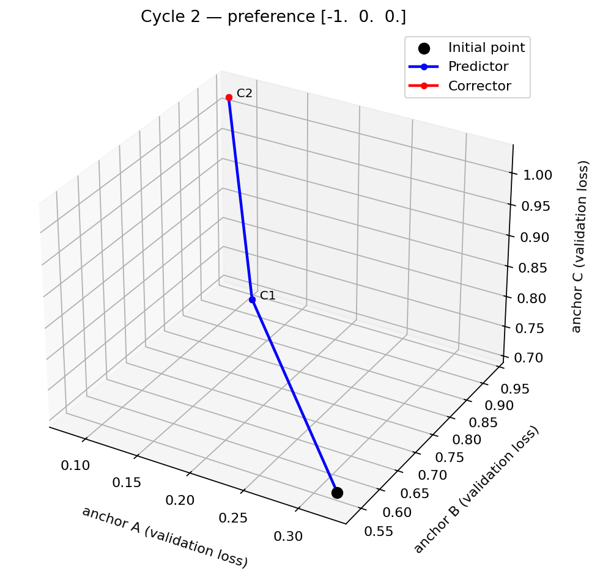

PPE / USER GUIDE / ALPHA
Your problem.
The PPE training algorithm.
PPE’s algorithm, implementation, Python API, and documentation website are developed and maintained by Augustina C. Amakor.
Create your own Python experiment file with your model, datasets, and objective losses. Import PPE to run the predictor–corrector algorithm. Training runs in your Python environment; this website provides instructions and a downloadable starter, and does not upload or train on your data.
1. Installation
Use Python 3.11 for the environment closest to the repository. Get a source checkout containing ppe-library/, then use its root directory:
git clone https://github.com/aamakor/PPE.git
cd PPE
python -m venv .venv
# Linux / macOS:
source .venv/bin/activate
# Windows PowerShell: .venv\Scripts\Activate.ps1
python -m pip install -e ./ppe-library
ppe demo --interactive --output runs/interactive-demoThis installs PyTorch, NumPy, SciPy and tqdm. A GPU is optional; the demo defaults to CPU. For a scripted one-cycle run without prompts, use ppe demo --output runs/first-demo. The distribution is named ppe-navigation and imports as ppe. There is no published PyPI release yet. If your checkout does not contain ppe-library/, obtain the library source or a wheel from the project maintainer before continuing.
Installation does not download the sample datasets. There are no imports from Data/, model registries, or references to local dataset paths in the package.
2. Connect your dataset and model
Yes: start with a file of your own, such as my_experiment.py. Copy the complete starter into your project. You do not need to edit the installed ppe/demo.py or the algorithm. One file is enough to start; larger projects may import models and datasets from separate modules.
- Install PPE, then save the starter as
my_experiment.pyin a directory you choose. - Set
OBJECTIVE_NAMES,CLASS_COUNTS,INPUT_DIM, and a freshOUTPUT_DIR. These constants belong to the starter, not the PPE API. - Replace
make_loaders()with your dataset loading, or setDATA_DIRto use the starter's NumPy file adapter described below. - Adapt
MultiTaskModelto your input and prediction tasks. For non-classification losses, replaceObjectives.classification(...)with the custom loss interface. - In
build(), choose the device, optimizers, optional schedulers, andPPEConfigsettings. Keep its return contract below. - Run the command from the directory containing your file:
ppe run my_experiment:build
# Optional live 3D view:
ppe run my_experiment:build --plotInstall the plotting extra first for the second command: python -m pip install -e './ppe-library[plot]' from the source checkout root. Use a fresh output directory for each run.
# my_experiment.py: the CLI imports this function and calls it.
def build():
# Construct model, losses, loaders, optimizers and trainer here.
return trainer, (train_loader, val_loader, test_loader), TerminalInteraction()The downloaded file contains the complete runnable implementation of this contract. build() supplies the objects; the CLI calls trainer.fit(...). Do not also call fit() inside build(). To run without the CLI, use python my_experiment.py; the starter's main block calls it once. Custom runs already use terminal interaction and do not need the demo-only --interactive flag.
Use your existing dataset
Your dataset should produce (inputs, targets). Inputs are a tensor with a batch dimension. Targets may be a tensor, dictionary, tuple, or list of tensors; PPE moves these recursively to the model's device. Use your own dataset for file reading, preprocessing and train/validation/test splits.
from torch.utils.data import DataLoader
train = DataLoader(train_dataset, batch_size=32, shuffle=True)
val = DataLoader(val_dataset, batch_size=32, shuffle=False)
test = DataLoader(test_dataset, batch_size=32, shuffle=False)Use a map-style dataset and a loader with a fixed batch_size. The predictor needs at least four training batches because the Jacobian calculation uses one quarter of the loader. Validation and test loaders must be nonempty.
Optional NumPy file adapter in the starter
You can keep the starter's loader when your data is already tabular arrays. Save three separate files under your chosen data directory:
my-project/
my_experiment.py
data/
train.npz
val.npz
test.npzEach file contains inputs with shape [samples, INPUT_DIM] and integer targets with shape [samples, number_of_objectives]. For example, with your already split arrays:
import numpy as np
np.savez("data/train.npz", inputs=train_x, targets=train_y)
np.savez("data/val.npz", inputs=val_x, targets=val_y)
np.savez("data/test.npz", inputs=test_x, targets=test_y)
# Set this in my_experiment.py:
DATA_DIR = "data"Create the data directory before saving. Paths are relative to the directory where you run the command. Target column i corresponds to objective i, and its class IDs range from 0 to CLASS_COUNTS[i] - 1. The adapter loads inputs as float32 and targets as integer tensors. With DATA_DIR = None, the starter uses generated demonstration data. For images, text, regression, or structured targets, provide your own dataset and make_loaders(); conversion to NumPy files is optional.
Define your model
The model must return a list or tuple with one output per objective, in the same order as your objective names. Here is a minimal three-task classifier:
import torch
from torch import nn
class MyModel(nn.Module):
def __init__(self, input_dim, class_counts):
super().__init__()
self.shared = nn.Sequential(nn.Linear(input_dim, 16), nn.Tanh())
self.heads = nn.ModuleList(
nn.Linear(16, count) for count in class_counts
)
def forward(self, inputs):
features = self.shared(inputs)
return [head(features) for head in self.heads]
model = MyModel(input_dim=8, class_counts=(2, 3, 2)).to("cpu")Place the model on its CPU or CUDA device before constructing optimizers. All parameters must require gradients and reside on one device. The predictor uses second derivatives: custom operators must support the required autograd operations. No custom save_model or load_model methods are needed.
Download the complete runnable classification starter ↓. It runs generated data by default and also includes the optional NumPy adapter above. For dictionary model inputs, adapt them into the supported tensor input contract in your dataset/model wrapper.
3. Define objective losses
Classification
from ppe import Objectives
objectives = Objectives.classification(("task A", "task B", "task C"))
# Model output: one [batch, classes_i] logits tensor per task.
# Targets: integer tensor [batch, 3].This interface uses cross entropy, integer label conversion and reported top-1 accuracy. Metrics are for reporting; validation losses drive the selection decisions.
Regression and structured targets
import torch.nn.functional as F
names = ("temperature", "pressure", "humidity")
def loss(index, output, targets):
return F.mse_loss(output, targets[names[index]])
objectives = Objectives(names, loss)
# Your dataset returns (input_tensor, {"temperature": ..., ...}).The callable receives (index, output_i, all_targets) and must return a finite, differentiable scalar tensor, with mean batch reduction. Select the target shape explicitly; avoid accidental broadcasting. PPE minimizes every objective. Loss scales are not automatically normalized.
Mixed objectives
def mixed_loss(index, output, targets):
if index == 0:
return F.cross_entropy(output, targets["class"].long())
if index == 1:
return F.mse_loss(output, targets["regression"])
return F.binary_cross_entropy_with_logits(output, targets["binary"])
objectives = Objectives(("class", "regression", "binary"), mixed_loss)An optional score(index, output_i, targets) callable returns a reporting metric. Without it, legacy console metric fields show nan to indicate no metric is defined.
More than three objectives
The library infers the objective count from len(objectives.names). There is no separate nobj setting to change, and the demo's three objectives are not a training limit. PPE supports three or more objectives, with matching model outputs and losses.
For a complete five-task classification setup, change these constants at the top of the downloaded starter:
OBJECTIVE_NAMES = ("task A", "task B", "task C", "task D", "task E")
CLASS_COUNTS = (2, 3, 2, 4, 2)
INPUT_DIM = 8
OUTPUT_DIR = "runs/five-objectives"
# DATA_DIR = None for generated data, or "data" for your split files.The starter builds five output heads from CLASS_COUNTS, creates five losses from OBJECTIVE_NAMES, and, with generated data, produces five target columns automatically. With your own data, you must supply all five target columns. For a different model or custom losses, make the corresponding changes yourself:
| Part | Five-objective contract |
|---|---|
| Objective names | Five unique names in a fixed order. |
| Model output | Five output tensors in the same order; classification shapes are [batch, classes_i]. |
| Targets and loss | Classification targets are [batch, 5]. A custom loss instead selects the correct target from your target structure for each index 0…4. |
| Preference vector | Five entries. The terminal builds this vector from your selected objective numbers. |
| 3D plot | Choose any three different objective indices. Training and recorded loss vectors still include all five objectives. |
ppe run my_experiment:build --plot --plot-objectives 1 3 5
# At the first preference prompt:
# Select objectives: 1, 5
# Enter 2 preference values: 0.7 0.3
# Internal five-entry vector: [-0.7, 0, 0, 0, -0.3]Each objective is a scalar quantity to minimize; it is not a class label. A five-class classifier is one objective if it uses one cross-entropy loss. For ten or more objectives, use comma- or space-separated indices, such as 1, 10, rather than concatenating digits. The website builder's preset counts are examples, not a cap on the library.
4. Configure training
from ppe import PPE, PPEConfig
config = PPEConfig(
output_dir="runs/my-experiment",
num_init=500, num_pred=10, num_corr=15,
num_minres=100, step_size=0.01, cycles=None,
)
optimizer = torch.optim.SGD(
model.parameters(), lr=0.01, momentum=0.9, weight_decay=1e-4,
)
corrector_optimizer = torch.optim.SGD(
model.parameters(), lr=0.001, momentum=0.9, weight_decay=1e-5,
)
trainer = PPE(model, objectives, optimizer, corrector_optimizer, config)
result = trainer.fit(train, val, test)The example above supplies optimizer settings in your experiment file. You supply both optimizers, so the library does not impose an optimizer or learning rate. step_size controls the predictor; it is separate from either optimizer's learning rate.
Optional scheduler=... and corrector_scheduler=... attach schedulers to their corresponding optimizers. The scheduler steps after every training batch. The starter demonstrates a cosine scheduler with batch stepping.
Set seeds and any device determinism configuration in your application. Importing PPE does not reset random state or select a Matplotlib backend.
5. Navigate with preferences
After the initial training and evaluation finish, PPE asks you to select objectives and enter preference values, through the get_preference(nobj) interface:
Select objectives (e.g. 1, 24, 135) [q to stop]: 13
Enter 2 preference values [q to stop]: 0.7 0.3
# Resulting internal preference: [-0.7, 0, -0.3]PPE negates the values you enter at the selected objective indices. In the current code, input validation checks vector length and finiteness and accepts either sign; it does not require a positive entered magnitude or a negative internal entry. An internal negative entry selects an objective for reduction. There is no automatic normalization, and accepted input still goes through the existing predictor checks. For ten or more objectives, use space- or comma-separated objective numbers, such as 1, 10.
The default cycles=None keeps asking for preferences after each completed predictor–corrector cycle. Enter q at a prompt to stop. Set cycles=1 for one completed cycle or cycles=0 for initialization only. Each cycle includes predictor and corrector steps with their own convergence and retry conditions. The retry prompts, step-size requests, new-front decision, and choice to keep the current preference remain available.
When PPE asks for input
- After initial training or loading an initial checkpoint, PPE evaluates the initial point and requests a preference.
- The predictor may ask for a new preference or step size when an existing check rejects progress. These requests can occur within one cycle.
- On the predictor rerun branch, choose
0to change preference or1to rerun, then answerKeep current preference? (y/n). Keeping it reuses the vector. Replacing it asks for one value per objective and negates those entered values. A rerun also asks for a positive iteration budget. - The corrector may ask whether to accept a new front when the front-change condition is reached.
- After a completed cycle, the default configuration returns to objective selection. Enter
qat any terminal prompt to stop.
Stopping through trainer.fit(...) returns status="stopped" with a reason and any completed cycle records. Reaching a cycle limit returns status="completed". Use resume=True to continue from saved recovery state.
Try interactive navigation
ppe demo --interactive --output runs/interactive-demoThe plain ppe demo command is a scripted one-cycle smoke example and does not request input. Add --interactive to choose preferences yourself after initialization.
Standalone preference function
from ppe import get_preference, NavigationStopped
try:
pref = get_preference(3)
except NavigationStopped:
pref = None # q, end of input, or a terminal interrupt.Normal trainer.fit(...) already invokes the terminal interaction at preference-request points; you do not need to call this function separately. To use the alternative complete-vector input format:
from ppe import TerminalInteraction
result = trainer.fit(train, val, test,
interaction=TerminalInteraction(preference_format="signed"))
# At its preference prompt, enter e.g. -0.7 0 -0.3Full signed vectors in this mode and in scripted decisions are passed through without negation. The objective/value prompt is the mode that negates entered values.
Scripted decisions
from ppe import ScriptedInteraction
decisions = ScriptedInteraction(
preferences=[[-1, 0, 0], [-0.5, -0.5, 0]],
step_sizes=[0.005],
accept_fronts=[True],
actions=[("rerun_predictor", [-1, 0, 0], 20)],
)
result = trainer.fit(train, val, test, interaction=decisions)
print(result.status, result.reason)Each decision has its own queue. Rejected directions may consume multiple preferences within one cycle. If a required queue is empty, PPE returns status="stopped" and explains the missing decision. It never assumes acceptance of a new front.
Application integration
Implement the Interaction protocol to connect your own UI or configuration source. It defines preference(n_objectives), step_size(), accept_front(), and action(preference, max_runs). The last method returns ("change_pref", vector, None) or ("rerun_predictor", vector, positive_int). Raise NavigationStopped to stop. Decisions are synchronous; a browser training service would need its own backend.
Use on_initial=callback for the evaluated initial point and on_cycle=callback for completed cycle loss vectors and preferences. The optional plotting helper consumes these events to reconstruct the 3D navigation.
3D navigation plots
Add --plot to your training command. The view shows the initial point in black, predictor segments in blue, and corrector segments in red. It updates after initialization and each completed cycle, while preferences are entered in your training terminal.
ppe run my_experiment:build --plot --plot-objectives 1 3 5This example plots objectives 1, 3 and 5 of a problem with at least five objectives. Omit --plot-objectives to display 1, 2 and 3. All objectives still participate in training. The display uses QtAgg or TkAgg when available and falls back to WebAgg when neither is usable.
The CLI saves results/navigation-3d.png beside results/navigation.json. You can also plot a saved run using the downloadable plotting script:
python plot_navigation.py RUN/results/navigation.json --objectives 1 3 5 --output trajectory.pngSee plotting usage for Python callbacks, other views, and older result files.

6. Results and checkpoints
runs/my-experiment/
checkpoints/
recovery.pt
archive/
initial_<id>.pth
initial_<id>.json
predictor_<id>.pth
predictor_<id>.json
corrector_<id>.pth
corrector_<id>.json
model_init_500_custom.pth
alpha_500.npy
model_pred_10_custom.pth
model_corr_15_custom.pth
model_corr_15_custom_old.pth
results/
navigation.json
first_result_cen0.pkl
first_result_test_cen0.pkl
first_alphas_cen0.pkl
init_total_loss_cen0.pkl
info_cen_init.txt
info_cen0.txtFiles appear when their corresponding phases finish. RunResult contains the absolute output directory, status, optional stop reason, and completed cycle records. The JSON file mirrors the status, reason, and records and now also stores initial.validation, initial.test, and objective_names. These allow plotting the initial point even when no navigation cycle completes. Each cycle record includes the signed preference, validation predictor/corrector losses, and test predictor/corrector losses. Cycle record numbers start at 1; legacy pickle filenames start at 0.
Each archived point has a unique model snapshot in checkpoints/archive/ and a matching JSON record containing its validation losses, alpha weights, phase, and checkpoint filename. These snapshots remain available across later cycles and resumes. Phase checkpoint files identify the current selected models. Model snapshots contain plain state dictionaries and load into the same architecture:
state = torch.load(checkpoint_path, map_location="cpu", weights_only=True)
model.load_state_dict(state)Continue a saved run
Recreate your trainer with the same model architecture, data, objective order, optimizers, schedulers, and training settings. Set the same output directory and resume=True, then call fit():
from dataclasses import replace
trainer, loaders, interaction = build()
trainer.config = replace(trainer.config, resume=True, cycles=5)
result = trainer.fit(*loaders, interaction=interaction)checkpoints/recovery.pt restores model parameters, both optimizer states, optional scheduler states, random-number-generator states, loader generators, completed history, and navigation state. Recovery boundaries are saved before initialization, after initialization, and after each completed cycle. An interrupted initialization or cycle is replayed from its saved start; recorded preference and front decisions are reused before new input is requested. For reproducible replay, use the same data and deterministic training setup, including num_workers=0 for loaders with random transforms.
cycles=5 means five completed cycles in total, including saved cycles. Use cycles=None for ongoing navigation. A matching recovery checkpoint is required for resume. Use a fresh output directory for an independent experiment. Only load recovery files created by your own trusted runs.
API reference
| Object | Contract |
|---|---|
PPE(model, objectives, optimizer, corrector_optimizer, config, *, scheduler=None, corrector_scheduler=None) | Wrap your fully trainable model. Both optimizers must own exactly its parameters. Schedulers must belong to the corresponding optimizer. |
PPE.fit(train_loader, val_loader, test_loader, *, interaction=None, on_cycle=None, on_initial=None) | Run the PPE training loop and return a RunResult. Rejected directions trigger preference or step-size prompts. |
Objectives(names, loss, score=None) | Ordered unique names, a per-task mean loss callback, optional reporting metric. At least three names. |
Objectives.classification(names) | Cross entropy and top-1 accuracy for column-wise integer targets. |
get_preference(nobj=3) | Standalone objective-selection and preference-value prompts, returning the signed NumPy vector. |
TerminalInteraction() | Objective-selection/value prompts with explicit front decisions and quit support. Optional preference_format="signed" accepts full vectors. |
ScriptedInteraction(preferences, *, step_sizes=(), accept_fronts=(), actions=()) | Explicit queues of decisions; exhaustion stops with a reason. |
RunResult | output_dir, status, reason, cycles, initial, objective_names. |
PPEConfig fields
| Field | Default | Meaning |
|---|---|---|
output_dir | Required | Run artifact directory. |
num_init | 500 | Positive initialization epoch count. |
num_pred | 10 | Predictor budget, at least 2. Supports early stopping and reruns. |
num_corr | 15 | Positive corrector epoch budget. |
num_minres | 100 | MINRES maximum iterations passed to SciPy. |
step_size | 0.01 | Positive initial predictor step size. |
cycles | None | Completed navigation cycles; 0 initializes only, None continues. |
resume | False | Restore saved training state and continue navigation in the same output directory. |
run_name | custom | Checkpoint filename label; letters, digits, hyphens, underscores. |
Command line
ppe demo --output runs/demo --device cpu --cycles 1
ppe demo --interactive --output runs/interactive-demo
ppe run my_experiment:buildA custom factory must be importable and return (trainer, (train_loader, val_loader, test_loader), interaction). Run from the factory's directory or install its module. python -m ppe.cli provides the same commands.
Examples and sample datasets
- Quadratic demo:
ppe demo --interactiveruns three conflicting quadratic objectives and asks for preferences after initialization and each completed cycle. Plainppe demosupplies scripted decisions for one cycle. - Classification starter: download the runnable factory and replace its synthetic data with your loaders.
- Toy examples: toyEx_code contains mathematical notebooks, interactive scripts and DTLZ 1–7 examples. Run these from the toyEx_code folder and follow the repository README. Install the dependencies listed for those examples.
- Sample experiments:
main.pyruns the supplied MultiMNIST/UCI models. For example,python main.py --dtype UCI --num_obj 3uses the supplied setup and available initial checkpoint. - Sample data: the README supplies Zenodo DOI 10.5281/zenodo.20623056. Extract according to the
Data/loaders when reproducing those experiments.
Supported behavior
Define your data, model, and losses through the PPE Python API.
- Three or more objectives, with matching model outputs and differentiable scalar mean losses.
- Training on CPU or CUDA, with fully trainable model parameters on one device and support for second derivatives.
- Map-style datasets, at least four training batches for navigation, nonempty validation and test loaders, and at least two predictor iterations.
- Objective minimization using the loss scales you supply; schedulers step after each training batch.
- Interactive or scripted preferences, convergence-based minimum-norm optimization, predictor retries, and front decisions.
- A unique model snapshot and validation-loss record for each archived point.
- Recovery of training state and recorded decisions, with interrupted work replayed from a saved initialization or cycle boundary.
- Live 3D plots and saved projections of selected objectives while training on all objectives.
Citation
Interactive Pareto Navigation for Deep Multi-task Learning
Augustina C. Amakor · Konstantin Sonntag · Sebastian Peitz
Machine Learning and Knowledge Discovery in Databases. Research Track. Springer Nature Switzerland, 2026, pp. 652–668.
DOI: 10.1007/978-3-032-37667-1_37
@inbook{Amakor2026,
title = {Interactive Pareto Navigation for Deep Multi-task Learning},
ISBN = {9783032376671},
ISSN = {1611-3349},
url = {http://dx.doi.org/10.1007/978-3-032-37667-1_37},
DOI = {10.1007/978-3-032-37667-1_37},
booktitle = {Machine Learning and Knowledge Discovery in Databases. Research Track},
publisher = {Springer Nature Switzerland},
author = {Amakor, Augustina C. and Sonntag, Konstantin and Peitz, Sebastian},
year = {2026},
month = Sept,
pages = {652–668}
}